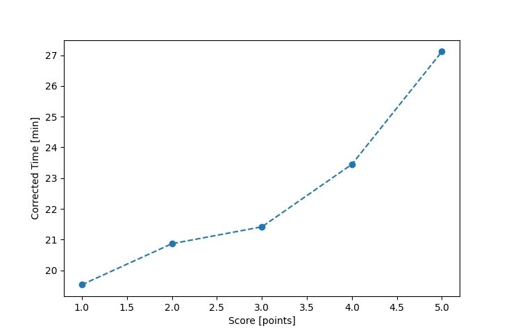

| Wind: | 2-3 (BFT) |
|---|---|
| RC: | Nick_H, David_Bu |
| Date: | June 02, 2024 |
| Notes: | M2 |
| Rank / Score | Name | Boat | Input Time [mm:ss] | Input Offset [mm:ss] | Race Time [mm:ss] | Race Time [s] | Handicap | Corrected Time [s] | Corrected Time [mm:ss] |
|---|---|---|---|---|---|---|---|---|---|
| 1.0 | Matt_L | F5 | 23:52 | 05:00 | 18:52 | 1132 | 0.96600 | 1172 | 19:32 |
| 2.0 | John_M | SF | 25:57 | 05:00 | 20:57 | 1257 | 1.00400 | 1252 | 20:52 |
| 3.0 | Gary_V | SF | 26:30 | 05:00 | 21:30 | 1290 | 1.00400 | 1285 | 21:25 |
| 4.0 | Heather_B | SF | 28:33 | 05:00 | 23:33 | 1413 | 1.00400 | 1407 | 23:27 |
| 5.0 | Sam | SF | 32:14 | 05:00 | 27:14 | 1634 | 1.00400 | 1627 | 27:07 |
| 7.0 | Jim_S | SF | DNF | -- | -- | -- | -- | -- | DNF |
| 7.0 | Ryan_C | PIRAT | DNF | -- | -- | -- | -- | -- | DNF |

Application Notes:
All race results are unofficial
View source code at https://github.com/cessnao3/portsmouthracecalc/